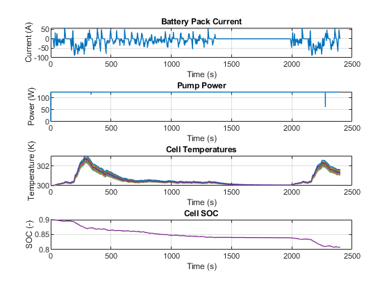

Battery Thermal Management
This example shows how to model an automotive battery pack for thermal management tasks. The battery pack consists of several battery modules, which are combinations of cells in series and parallel. Each battery cell is modeled using the Battery (Table-Based) Simscape Electrical block. In this example, the initial temperature and the state of charge are the same for all cells. Eight battery modules, six of one type and two of another type, are connected in series to simulate a battery pack. The Battery Controls subsystem defines the logic to determine the battery pack flowrate for the applied current load.
Contents
Model Overview
The example models a battery pack connected to an auxiliary power load from a chiller, as defined in Current sensor and Aux. load (pump) subsystem. The BatteryControl subsystem defines how much coolant flowrate is required to cool the HV-BatteryPack. A controlled current source defines DC current demand from the HV-BatteryPack subsystem.

Battery Cell Overview
The battery cell is modeled using the equivalent circuit method. The equivalent circuit parameters used for each cell can be found in the initialization file Battery_Pack_Thermal_Management_ini.m. To characterize a lithium-ion cell, this example uses a 2-RC model. No cell capacity fade or charge leakage is considered in this example.
Battery Module Overview
To use this module to create a unique battery module, first specify the number of series and parallel-connected cells. Then specify the cell type for all individual cells by choosing one of these options for Choose cell type parameter of the Battery Module block:
- Pouch
- Can
- Compact cylindrical
- Regular cylindrical
This example uses pouch-type cells. Modules 1, 2, 3, 6, 7 & 8, each consist of 12 series-connected and three parallel-connected cells. Modules 4 & 5 consists of 16 series-connected and three parallel- connected cells.
The two output ports, SOC and Temp, provide information regarding the state of charge and the temperature of each cell in the module. The thermal port, Amb is used to define the ambient temperature in the simulation. The electrical ports, pos and neg, define the electrical positive and negative terminals, respectively. The two input ports, FlwR and FlwT, define the battery coolant flow rate control and inlet temperature into the module.
The figure below shows examples of battery cells in Pouch and Can configurations.

The figure below shows examples of battery cells in Compact cylindrical and Regular cylindrical configurations.

These are the parameters in the battery module:
- Select model fidelity — Two options are available, Detailed and Lumped. Modules are defined as Lumped in this example. In a Lumped model representation, different cells of a module are not tracked separately but lumped together. Cell-to-Cell variations in the module are averaged out. In a Detailed model representation, all cells are tracked separately and all Cell-to-Cell variations within a module are taken into account.
- Vector of temperatures, T — Temperatures at which the cell or module data for temperature-varying properties are tabulated, specified as a vector.
- Single cell Ahr rating, baseline — Cell capacity at the temperatures defined in the Vector of temperatures, T parameter, specified as a vector.
- Vector of state of charge values, SOC — Range of values between 0 and 1 at which the cell electrical parameters are defined, specified as a vector.
- Vector of coolant flowrates, L — Coolant mass flow rate values at which a lookup table for cell cooling is defined. This parameter needs to cover multiple points in the flow range of interest. This parameter defines the size of the Effective rate of coolant heat transfer parameter and is specified as a vector.
- No load voltage, V0 — Cell open-circuit potential values at different Vector of state of charge values, SOC and Vector of temperatures, T points, specified as a matrix.
- Terminal resistance, R0 — Cell ohmic resistance values at different Vector of state of charge values, SOC and Vector of temperatures, T points, specified as a matrix.
- Polarization resistance — Polarization resistance values at different Vector of state of charge values, SOC and Vector of temperatures, T points, specified as a matrix.
- Time constant — Time constant at different Vector of state of charge values, SOC and Vector of temperatures, T points, specified as a matrix.
- Cell thermal mass — Thermal mass of a single cell, specified as a scalar.
- Cell thermal conductivity — Cell through-plane conductivity for pouch and can cells, or the radial conductivity for cylindrical cells, specified as a scalar.
- Heat transfer coefficient to ambient — Heat transfer coefficient value, specified as a scalar.
- Number of series connected cells Ns — Number of strings in series, specified as an integer.
- Number of parallel connected cells Np — Number of parallel-cells in a string, specified as an integer.
- Choose cell type — Type of cell, specified as either Pouch, Can, Compact cylindrical, or Regular cylindrical.
- Cell height — Cell height, specified as a scalar.
- Cell width — Cell width for Pouch and Can cells, specified as a scalar.
- Cell thickness — Cell thickness for Pouch or Can cells, specified as a scalar.
- Cell diameter — Cell diameter for Compact cylindrical or Regular cylindrical, specified as a scalar.
- Number of cylindrical cells in a straight line — Number of cylindrical cells arranged in a straight line for packaging, specified as an integer.
- Accessory total resistance — Resistance that combines all inline resistance in a module, specified as a scalar. This resistance is the sum of cell tab, busbar, cable and/or weld resistances, specified as a scalar.
- Cell balancing — Cell balancing method, available with only the Detailed battery module representation, specified as either none or passive. In this example, this parameter is set to none. Upon selection of passive cell balancing, four parameters become visible. These parameters are: Shunt resistor, Switch closed resistance, Switch open conductance and Switch operation threshold. Passive cell balancing is shown schematically in the figure below:

- Effective rate of coolant heat transfer from each cell — Estimate of the thermal resistance (W/K) of heat transfer from battery cells to coolant, specified as a 3-D matrix of scalar values. The 3-D matrix size depends on the Vector of temperatures, T, Vector of coolant flowrates, L and NsxNp parameters. The NsxNp parameter is the total number of cells in the module. The battery cooling is represented as a lookup table or 3-D matrix of size [T,L,Ns*Np] and the values are calculated using detailed 3-D methods such as computational fluid dynamics. The values of the matrix depend on the actual hardware design of the cooling system or cold plates in the module. The performance of the cold plate is controlled using input values FlwR and FlwT. The same is shown in the figure given below

- External heat — External heat input to each cell in a module due to a hot component placed near the module, specified as a vector.
- Vector of initial cell temperature — Cell initial temperature, specified as a vector.
- Vector of initial cell state of charge — Cell initial state of charge, specified as a vector.
- Cell Ahr rating variation — Cell-to-cell variations in cell capacity at all Vector of temperatures, T points for each cell, specified as a vector of scalar values. If you set this array to 1, all cell capacity is the same. The array values for a cell are multiplied with the value specified in the Single cell Ahr rating, baseline parameter to calculate the actual capacity or the Ahr rating of the cell.
- * Cell terminal resistance R0 variation from baseline R0* — Cell-to- cell variations in cell internal resistance, specified as a vector. If you set this array to 1, all cell Terminal resistance, R0 is the same.
To define the battery coolant flow rate and temperature, specify these inputs:
- FlwR — Value between 0 and 1, specified as a scalar. The FlwR input value is used to dynamically choose the right value of the flow rate during the simulations. The value of the FlwR input defines the actual flow rate in the module. In the Vector of coolant flowrates L parameter, FlwR equal to 0 means no flow, while FlwR equal to 1 means highest flow rate value.
- FlwT — Positive or negative value that, when summed to the ambient temperature, equals the coolant inlet temperature. A value of +15 for the FlwT input and 300 K at the Amb port makes the coolant inlet temperature equal to 300 + 15 = 315K. A value of -15 for the FlwT input and 300 K at the Amb makes the coolant inlet temperature equal to 300 - 15 = 285 K
Build Battery Pack
The HV-BatteryPack is made up of 8 series connected Battery Modules. Module 1-3 & 6-8 are of same type, with each module consisting of 3 parallel cells per series of 12 such strings. Module 4 & 5 are of the same type, with each module consisting of 3 parallel cells per series of 16 such strings. All modules have same type of Pouch cells with the total number of cells in the HV-BatteryPack being equal to 312 (6 modules of 12X3 cells and 2 modules of 16X3 cells). With each cell being rated at approx. 3.8V/cell, the total pack voltage is close to 400V (~395V). The different modules in this 400V HV-BatteryPack are connected together using busbars, modeled as lumped resistors (R12, R23, R34... R78). The coolant flow maldistrubtion occurs in the pack with modules farther away receiving lesser flow-rate, as specified in the Flow_maldistribution_to_different_Modules subsystem.

Define Battery Controls
The FlwR_calc subsystem calculates a value for the input FlwR for all modules in the HV-BatteryPack. Pump power loss is calculated based on FlwR value, with 500W being the maximum pump power consumption. Pump power is assumed to have a linear relationship with FlwR, as specified in the subsystem Pump_power_calc.
Simulation Results, Lumped Model
The results below are from a simulation using only Lumped fidelity and parameters defined in the Battery_Pack_Thermal_Management_ini.m file.
Plot showing SOC and temperature of Module 3 (Lumped fidelity averages results of all cells).

Simulation Results, Detailed model
The results below are from a simulation using Lumped fidelity for all modules except module 3 where Detailed fidelity was used. The temperature and SOC results reflect cell-to-cell variation.